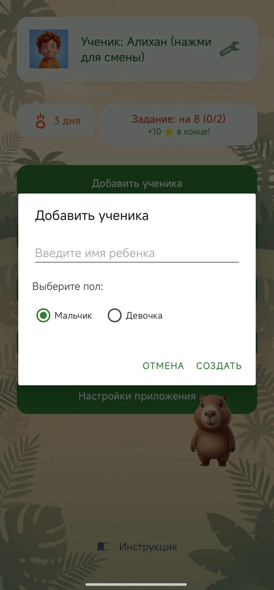
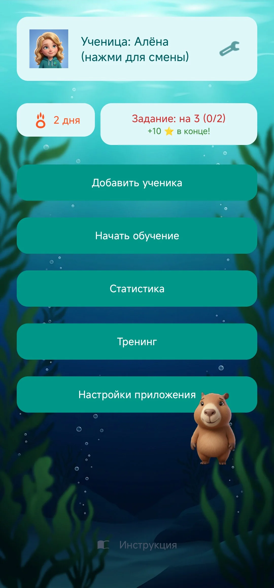
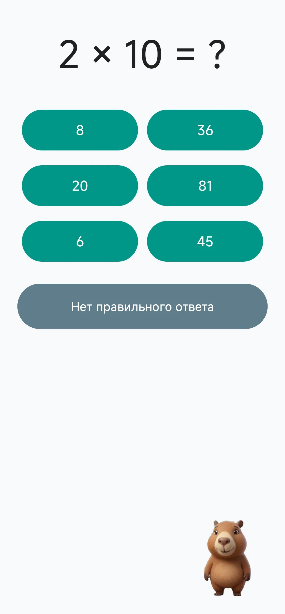
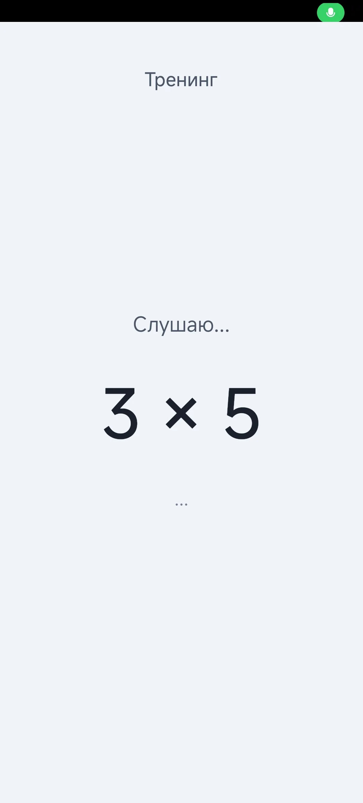
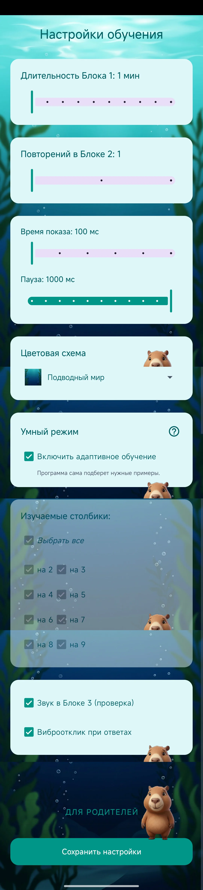
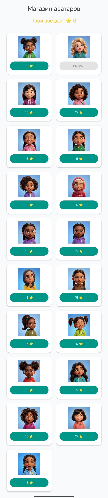
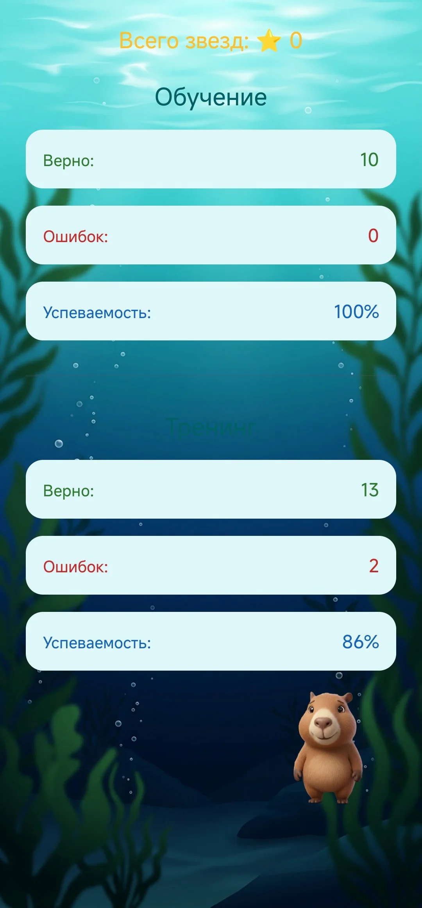

Учим таблицу умножения с Капибарой
Добро пожаловать в интерактивный тренажер! Это руководство поможет вам и вашему ребенку максимально эффективно использовать все возможности приложения.
1. Первый запуск: Твой герой
При первом открытии приложения создайте профиль ученика. Это позволит помощнику-Капибаре обращаться к ребенку по имени и сохранять его личный прогресс.
- Введите имя ребенка.
- Выберите пол — от этого зависят окончания в репликах помощника.
- Аватар будет присвоен автоматически (позже в магазине можно будет открыть новые).

2. Главный экран: Центр управления
Здесь ребенок видит свою текущую статистику и доступные задания:
- Звезды: Валюта, которую можно тратить в магазине.
- Серия дней: Мотивирует заходить в приложение ежедневно.
- Карточка задания: Специальная цель на день с повышенной наградой.

3. Три этапа обучения
Для глубокого запоминания мы используем методику трех блоков:
Этап 1: Зрительная память («Смотри»)
Примеры быстро мелькают на экране. Задача ребенка — просто смотреть. Это закрепляет таблицу в подсознании.
Этап 2: Слуховая память («Слушай»)
Капибара диктует пример, а ребенок вводит ответ. Это развивает восприятие математики на слух.
Этап 3: Проверка знаний («Выбирай»)
Классический тест с вариантами ответов. Важно: в 20% случаев правильного ответа может не быть — тогда нужно нажать кнопку «Нет правильного ответа».

4. Голосовой тренинг (Экзамен)
В этом режиме ребенок не использует клавиатуру. Капибара спрашивает — ребенок отвечает вслух.
Для родителей: При первом запуске тренировки разрешите приложению доступ к микрофону. Это необходимо для распознавания речи.

5. Умный режим (Smart Mode)
Система анализирует ошибки. Те примеры, в которых ребенок ошибся, будут выпадать чаще, пока алгоритм не убедится, что материал усвоен. Если становится слишком сложно, программа автоматически упростит следующие 2-3 задачи.
6. Настройки и Темы
В меню настроек вы можете адаптировать приложение под темп обучения вашего ребенка:
- Изменение времени показа карточек (от 0.5 до 5 сек).
- Выбор конкретных чисел для изучения (например, только на «7» и «8»).
- Смена оформления: доступно 11 тем (Космос, Лего, Динозавры и др.).

7. Магазин и темы оформления
Заработанные звёзды можно и нужно тратить!
- Магазин аватаров: покупай новые крутые образы для своего профиля.
- Темы: в настройках можно сменить фон. Ты можешь учиться в Космосе, в мире Лего, среди Динозавров или даже в Подводном мире (всего 11 тем!).

8. Статистика (Для родителей)
В этом разделе можно увидеть подробный отчет: сколько примеров решено правильно, какой процент точности и сколько всего звёзд накоплено. Это поможет понять, какие числа уже усвоены, а над какими стоит еще поработать.
